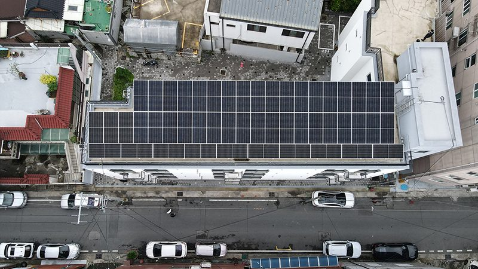

조은희 대구지방환경청장, 재생에너지 혜택이 주민에게 돌아가는 질적 성장 필요…대구·경북 햇빛소득마을 72곳 주목

재생에너지의 날 앞둔 기고…대구·경북 태양광 발전량 전국 14.9%, 대구 시민햇빛발전소 24호기까지 준공, 투명한 수익 배분·주민 동의·생태 보전을 과제로 꼽아
조은희 대구지방환경청장은 올해 처음 법정기념일로 맞는 재생에너지의 날(10월 23일)을 앞두고 낸 기고에서, 에너지 전환이 발전설비를 늘리는 양적 성장에 그치지 않고 발전수익과 혜택이 지역주민에게 돌아가는 질적 성장으로 이어져야 한다고 주장했다. 조 청장은 그 모델로 마을 지붕 등 유휴부지의 태양광을 주민 협동조합이 운영하고 수익을 주민 소득과 마을 복지로 돌리는 햇빛소득마을을 들었다. 그는 2024년 신·재생에너지 보급통계를 들어 대구·경북의 태양광 발전량이 약 557만MWh로 전국의 14.9%를 차지한다고 소개했다. 대구에서는 공공 유휴부지를 활용한 시민햇빛발전소가 올해 9월 24호기까지 준공됐고, 공공임대주택 옥상에 세운 22호기는 발전수익의 약 15%를 에너지 취약계층에 지원하고 있다. 대구·경북에서 햇빛소득마을로 선정된 곳은 대구 8곳, 경북 64곳 등 72곳이다. 조 청장은 투명한 수익 배분과 주민 동의, 생태환경 피해 방지를 과제로 꼽고, 대구지방환경청이 환경 보전과 재생에너지 확대가 조화를 이루는 지역 맞춤형 사업 모델을 지원하겠다고 밝혔다.
시민에너지 관점
대구 시민햇빛발전소 22호기가 발전수익의 약 15%를 에너지 취약계층에 돌린 사례는, 수익 배분 원칙을 미리 정해 두면 공공부지 발전소가 지역 복지의 재원이 될 수 있음을 보여 준다. 환경 당국이 재생에너지 확대를 앞세우면 생태 훼손을 가볍게 볼 수 있다는 우려도 나올 수 있지만, 지붕과 공공 유휴부지처럼 이미 쓰이고 있는 땅을 먼저 활용하고 주민이 입지 결정에 참여한다면 확대와 보전은 함께 갈 수 있다. 주민이 수익을 받는 데서 그치지 않고 출자자이자 주인이 될 때 발전소는 마을이 스스로 지키고 키우는 자산이 된다. 대구·경북의 72개 선정 마을부터 수익 배분과 생태 보전 기준을 공개하는 표준을 세워 다른 지역의 본보기로 삼아야 한다.
출처: 경북도민일보 2026-10-22 조은희(대구지방환경청장, 기고) 원문 보기
チョ・ウニ大邱地方環境庁長、再エネの恩恵が住民に戻る質的成長が必要…大邱・慶北の太陽光所得村72か所に注目
再生可能エネルギーの日を前に寄稿…大邱・慶北の太陽光発電量は全国の14.9%、大邱の市民太陽光発電所は24号機まで完成、透明な収益配分・住民同意・生態系保全を課題に
チョ・ウニ大邱地方環境庁長は、今年初めて法定記念日として迎える「再生可能エネルギーの日」（10月23日）を前に寄せた寄稿で、エネルギー転換は発電設備を増やす量的成長にとどまらず、発電収益と恩恵が地域住民に還元される質的成長につながらなければならないと主張した。チョ庁長はそのモデルとして、村の屋根などの遊休地に設けた太陽光を住民の協同組合が運営し、収益を住民の所得と村の福祉に回す太陽光所得村を挙げた。2024年の新・再生可能エネルギー普及統計を引き、大邱・慶尚北道の太陽光発電量は約557万MWhで全国の14.9%を占めると紹介した。大邱では公共の遊休地を活用した市民太陽光発電所が今年9月に24号機まで完成し、公共賃貸住宅の屋上に設けた22号機は発電収益の約15%をエネルギー弱者の支援に充てている。大邱・慶北で太陽光所得村に選ばれたのは大邱8か所、慶北64か所の計72か所。チョ庁長は透明な収益配分と住民の同意、生態環境への被害防止を課題に挙げ、大邱地方環境庁として環境保全と再エネ拡大が調和する地域に合った事業モデルを支援していくと述べた。
市民エネルギーの視点
大邱の市民太陽光発電所22号機が発電収益の約15%をエネルギー弱者に回した例は、収益配分の原則をあらかじめ決めておけば、公共用地の発電所が地域福祉の財源になりうることを示している。環境当局が再エネ拡大を前面に出せば生態系の毀損を軽く見かねないとの懸念もありうるが、屋根や公共の遊休地のようにすでに使われている土地をまず活用し、住民が立地の決定に参加するなら、拡大と保全は両立できる。住民が収益を受け取るだけでなく出資者であり所有者になるとき、発電所は村が自ら守り育てる資産になる。大邱・慶北の選定72村から、収益配分と生態保全の基準を公開する標準をつくり、他地域の手本とすべきだ。
出典: Gyeongbuk Domin Ilbo 2026-10-22 Cho Eun-hee (Administrator, Daegu Regional Environmental Office; contributed column) 原文を読む
大邱地方环境厅厅长Cho Eun-hee：需要让可再生能源惠及居民的质的增长…关注大邱和庆北72个阳光收入村
可再生能源日前撰文…大邱和庆北太阳能发电量占全国14.9%，大邱市民阳光发电站已建成至24号，将透明的收益分配、居民同意和生态保护列为课题
大邱地方环境厅厅长Cho Eun-hee在今年首次作为法定纪念日的"可再生能源日"（10月23日）前发表的文章中主张，能源转型不应止于增加发电设施的量的增长，而应延伸到让发电收益和好处回到当地居民手中的质的增长。文章以阳光收入村为例：由居民合作社运营建在村庄屋顶等闲置场地上的太阳能设施，把收益用于居民收入和村庄福利。文章引用2024年新再生能源普及统计指出，大邱和庆尚北道的太阳能发电量约为557万兆瓦时，占全国的14.9%。在大邱，利用公共闲置场地建设的市民阳光发电站今年9月已建成至24号，其中建在公共租赁住房屋顶上的22号把约15%的发电收益用于资助能源弱势群体。大邱和庆北被选为阳光收入村的共有72个，其中大邱8个、庆北64个。Cho Eun-hee把透明的收益分配、居民同意和防止生态环境受损列为课题，并表示大邱地方环境厅将支持环境保护与可再生能源扩大相协调、符合地方条件的项目模式。
市民能源视角
大邱市民阳光发电站22号把约15%的发电收益用于能源弱势群体，说明只要事先定好收益分配原则，建在公共场地上的电站就能成为地方福利的财源。有人可能担心，环境部门强调扩大可再生能源，可能会轻视生态破坏；但如果优先利用屋顶和公共闲置场地等已在使用的土地，并让居民参与选址决定，扩大与保护就可以并行。居民不只是领取收益，而是成为出资者和主人时，电站就会成为村庄自己守护、自己培育的资产。应从大邱和庆北的72个入选村庄开始，建立公开收益分配和生态保护标准的规范，作为其他地区的样板。
来源: Gyeongbuk Domin Ilbo 2026-10-22 Cho Eun-hee (Administrator, Daegu Regional Environmental Office; contributed column) 查看原文
Daegu environment chief Cho Eun-hee calls for renewables growth that returns benefits to residents, highlights 72 Sunlight Income Villages in Daegu and North Gyeongsang
Renewable Energy Day column notes the region produces 14.9% of Korea's solar power and Daegu has completed 24 citizen solar plants; names transparent revenue sharing, resident consent and ecological protection as tasks
Cho Eun-hee, administrator of the Daegu Regional Environmental Office, argued in a column ahead of Renewable Energy Day on October 23, observed as a statutory day for the first time this year, that the energy transition must go beyond the quantitative growth of adding generating capacity to qualitative growth in which revenue and benefits return to local residents. As a model, Cho pointed to Sunlight Income Villages, where resident cooperatives run solar panels on village rooftops and other idle land and channel the revenue into resident income and village welfare. Citing 2024 renewable energy deployment statistics, the column noted that solar generation in Daegu and North Gyeongsang Province was about 5.57 million MWh, or 14.9% of the national total. In Daegu, citizen solar plants built on idle public land reached No. 24 in September this year, and plant No. 22, on the roof of public rental housing, puts about 15% of its revenue toward helping energy-poor households. A total of 72 villages in the region have been selected as Sunlight Income Villages, 8 in Daegu and 64 in North Gyeongsang. Cho named transparent revenue sharing, resident consent and preventing harm to ecosystems as the challenges, and said the Daegu office will support locally tailored project models that balance environmental protection with renewable expansion.
Citizen Energy View
Daegu's citizen solar plant No. 22, which directs about 15% of its revenue to energy-poor households, shows that when revenue-sharing rules are set in advance, plants on public land can become a source of funding for local welfare. Some may worry that an environmental authority championing renewables could take ecological damage lightly, but if already-used land such as rooftops and idle public sites comes first and residents take part in siting decisions, expansion and conservation can go together. When residents do more than receive revenue and become investors and owners, a plant becomes an asset the village protects and grows itself. The 72 selected villages in Daegu and North Gyeongsang should be the first to set a standard for disclosing revenue-sharing and ecological criteria that other regions can follow.
Source: Gyeongbuk Domin Ilbo 2026-10-22 Cho Eun-hee (Administrator, Daegu Regional Environmental Office; contributed column) Read the original